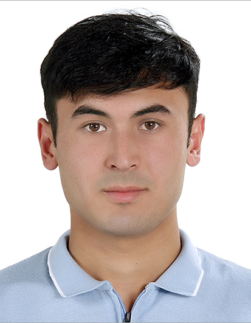

안녕하세요, 끊임없이 학습하고
가치를 만드는 토히르벡(Tokhirbek)입니다.
한국성서대학교 컴퓨터소프트웨어학과 3학년에 재학 중입니다. React 기반의 인터랙티브 웹 애플리케이션 개발부터 머신러닝(CNN) 이미지 분류, AIoT 임베디드 하드웨어 제어까지 폭넓은 기술적 도전을 거치며 문제 해결 역량을 쌓아가고 있습니다.

기술 스택 (Tech Stack)
수업 및 프로젝트를 통해 직접 사용하고 구현해 본 기술 목록입니다.
웹 프론트엔드 (Frontend)
-
•
React 19 & Vite: 컴포넌트 생명주기 제어, Hook(useState, useEffect) 기반 상태 관리
-
•
Leaflet 1.9 & OpenStreetMap: 대화형 핀 마커 및 레이어 필터링 구현
-
•
JavaScript (ES6+) / HTML5 / CSS3: 비동기 통신, DOM 제어, 반응형 UI 레이아웃
객체지향 & 임베디드 (Core SW)
-
•
Java: 객체지향 프로그래밍(OOP), 캡슐화, 상속, 인터페이스 및 예외 처리
-
•
C/C++ & Arduino: 마이크로컨트롤러 입출력, 인터럽트 제어, 센서 연동
-
•
AIoT 실습: 초음파 센서, LED 모듈, 부저 피드백 제어 시스템
인공지능 & 개발 도구 (Tools)
-
•
Python & TensorFlow: CNN 합성곱 신경망 기반 패션 이미지 분류 실습
-
•
Git / GitHub & Actions: 브랜치 기반 버전 관리 및 GitHub Pages 자동 CI/CD 배포
-
•
설계 도구: VS Code, Google Colab, StarUML, Cisco Packet Tracer, Figma
프로젝트 (Projects)
실제 수업 과제 및 팀 협업을 통해 설계하고 구현한 프로젝트입니다.
TohirMap (토히르맵)
지도로 탐색하는 우즈베키스탄 여행·문화·음식 인터랙티브 아카이브 플랫폼
JavaScript 수업 3인 팀 프로젝트로 개발되었으며, 팀원 토히르벡(본인)의 고향인 우즈베키스탄의 여행지, 전통 음식(플로브, 샤실릭 등 12종), 역사 문화와 25가지 현지인 인터뷰를 단순 나열이 아닌 인터랙티브 지도 탐색 흐름으로 유기적으로 연결한 웹 애플리케이션입니다.
Fashion-MNIST 이미지 분류
CNN 합성곱 신경망 모델 학습
10가지 의류 및 패션 아이템 흑백 데이터셋(28x28)을 전처리하고, Conv2D, MaxPool, Dropout 레이어를 조합한 CNN 아키텍처를 설계하여 이미지 분류 모델을 학습 및 평가했습니다.
Arduino & AIoT 센서 제어
초음파 센서 및 멀티 피드백 제어
초음파 센서를 통해 측정된 거리 데이터를 기반으로 거리 단계별 LED 점등 패턴과 피에조 부저의 경고음 주파수를 동적으로 제어하는 임베디드 펌웨어 로직을 C++로 작성했습니다.
Java 연산 프로그램
객체지향 원칙 적용 계산기
사칙연산 비즈니스 로직을 별도 클래스로 분리 캡슐화하고, 유효하지 않은 입력값 및 0으로 나누는 연산에 대한 커스텀 예외 처리를 체계적으로 구현했습니다.
학생 학업 일정 관리 시스템
시간표 및 과제 관리 인터페이스
학생들이 수강 과목 일정과 과제 마감일을 등록하고 우선순위별로 조회할 수 있는 웹 앱입니다. DOM 조작 및 입력 데이터 검증을 순수 자바스크립트로 구현했습니다.
학력 및 교육 이력 (Education)
성실하게 밟아온 공학적 기반과 소프트웨어 전공 과정입니다.
한국성서대학교
컴퓨터소프트웨어학과 (Computer Software Engineering)
자바 프로그래밍, 자료구조, 소프트웨어 공학, 웹 프로그래밍, 컴퓨터 네트워크 수강
서정대학교
자동차과 (전문학사 졸업)
기계 제어 및 메카트로닉스 기초 시스템 이해
신뢰할 수 있는 개발자로 함께 성장하겠습니다
신입 IT 소프트웨어 개발자 포지션 및 프로젝트 관련 문의는 아래 연락처를 통해 언제든 편하게 연락 주십시오.